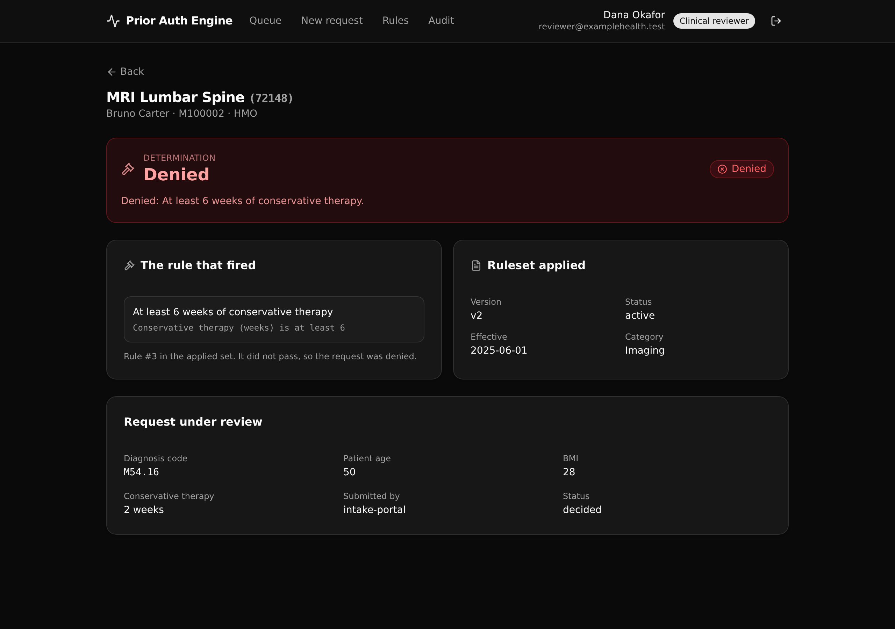

One governed decision service every intake portal and provider tool calls, so medical-necessity rules live in one auditable place instead of three copies.

The decision view: the determination, the exact rule that fired, and the ruleset version applied.
A single decide_request function is the only path that produces a decision, so no
caller re-encodes its own version of the logic.
Each procedure keeps one active criteria set and its retired ones, so a decision made under an older version stays explainable.
Rules run in order. The first that fails sets the outcome (deny or refer) and names itself; passing every rule approves the request.
Every run appends one row, never edits one, with the member, procedure, and version denormalized so the trail reads on its own.
A clinical reviewer decides; a read-only auditor may view and audit, but the decide endpoint refuses it. The gate is a per-endpoint role check.
The React frontend derives every path and request and response type from the backend defs, so a schema change flows straight into the UI.
| Method | Path | What it enforces |
|---|---|---|
| POST | api:priorauth_authn/login | Verify a reviewer and mint a bearer token (public). |
| GET | api:priorauth_authn/me | The signed-in reviewer. |
| POST | api:priorauth/requests | Member active and procedure exists; short-circuits a non-gated procedure to approve. |
| POST | api:priorauth/decide | Runs the governed decision. Clinical reviewer only. |
| GET | api:priorauth/decisions/{request_id} | The decision joined to its request, member, procedure, and the rule that fired. |
| GET | api:priorauth/audit | The append-only trail, filtered by member number and/or procedure code. |
| GET | api:priorauth/criteria/{procedure_id} | The active ruleset with its ordered rules, and every version on record. |
| GET | api:priorauth/queue | Requests awaiting a decision. |
Paste this to an AI coding agent (Claude Code, Cursor, and the like) to start a new Xano backend from this template:
Clone https://github.com/xano-scratch/prior-auth-decision-engine and use it as the starting template for my Xano backend. Read the README and the xano/ defs first, then adapt the tables, endpoints, and decision rules to my domain. Author against @xanots/sdk (its llms.txt), keep the one typed api.ts contract, and ship with `npm install` then `npm run xano:deploy`.
Or clone and deploy it as-is:
git clone https://github.com/xano-scratch/prior-auth-decision-engine.git cd prior-auth-decision-engine npm install npx xanots login npm run xano:deploy
The build summary links a live ephemeral environment. Ephemerals auto-expire, so a shared link may
have stopped serving by the time you read this. The durable artifact is this repo: clone it and run
npm run xano:deploy for a fresh live URL of your own in about a minute.